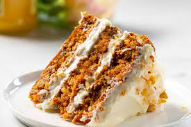

Carrot Cake

Description
This treat boasts the flavors of carrot cake in a quick bread form. It’s bursting with carrots, walnuts, cinnamon and nutmeg and is finished off with sweet cream cheese frosting.
Ingredients
Bread
- 1 box Betty Crocker™ Super Moist™ Yellow Cake Mix
- 1/2 cup vegetable oil
- 1/2 cup water
- 4 eggs
- 2 teaspoons ground cinnamon
- 1/2 teaspoon ground nutmeg
- 2 cups coarsely shredded peeled carrots (3 medium)
- 1/3 cup finely chopped walnuts
Frosting
- 4 oz (half of 8-oz package) cream cheese, softened
- 2 tablespoons butter, softened
- 3/4 cup powdered sugar
- 1/4 teaspoon vanilla
Steps
- Heat oven to 350°F. Spray bottoms only of two 8x4-inch loaf pans with cooking spray.
- In large bowl, beat cake mix, oil, water, eggs, cinnamon and nutmeg with electric mixer on medium speed 2 minutes, scraping bowl occasionally. Stir in carrots and walnuts. Divide batter evenly between pans.
- Bake 40 to 45 minutes or until toothpick inserted in center comes out clean. Cool 10 minutes. Run knife around edges to loosen loaf. Remove from pans to cooling rack. Cool completely, about 1 hour.
- In small bowl, beat Frosting ingredients with spoon until smooth. Frost tops of loaves. When ready to serve, cut into slices. Cover and refrigerate any remaining bread.